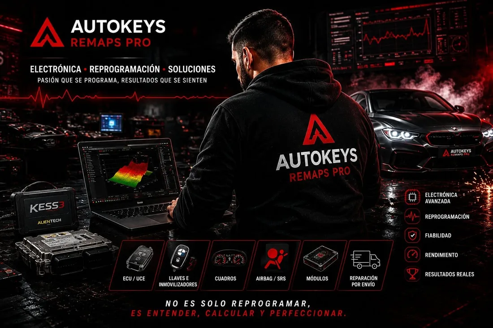

Resuelve electrónica compleja sin convertir tu taller en un laboratorio
Apoyamos a talleres y profesionales con centralitas ECU/TCU, inmovilizadores, BMW FEM/BDC, Mercedes EZS/ELV, UCH/BCM/BSI, airbag, cuadros y otros módulos. Revisamos el caso antes de pedirte que desmontes o envíes material.

Cuéntanos qué trabajos necesitas derivar
Déjanos los datos del taller y el tipo de electrónica que recibes. Revisaremos tu caso y te llamaremos para explicarte el funcionamiento, los envíos y las condiciones profesionales.
- Valoración previa antes de enviar material
- Recogida y devolución disponibles
- Presupuesto detallado antes de intervenir
- Seguimiento identificado de cada trabajo
Los trabajos que bloquean horas de diagnosis o requieren equipo específico
No necesitas identificar de antemano el procedimiento exacto. Envíanos referencias, síntomas, códigos de avería y antecedentes de la unidad; nosotros te indicamos qué necesitamos para valorar el caso.
Recuperación, reparación, clonación y diagnosis de unidades.
BMW FEM / BDC / CAS / EWSArranque, datos, llaves, recuperación y sustitución.
Mercedes EZS / ELVContacto, bloqueo de dirección, llaves y módulos asociados.
UCH / BCM / BSI y confortFallo de comunicación, recuperación y transferencia de datos.
Airbag / SRS y cuadrosMódulos electrónicos, datos y reparación según referencia.
Un flujo sencillo para que el vehículo no se quede parado por falta de información
Abres el caso
Vehículo, referencia, síntomas, DTC y fotografías o informe de diagnosis.
Confirmamos material
Te indicamos qué unidad, llave o donante necesitamos y evitamos envíos innecesarios.
Laboratorio
El trabajo queda identificado y se revisa con el procedimiento adecuado para esa referencia.
Devolución y seguimiento
Recibes la unidad y la información necesaria para continuar el montaje o las adaptaciones del vehículo.
Primero referencias y síntomas; después desmontamos lo necesario
En electrónica del automóvil una misma carrocería puede montar generaciones de módulos diferentes. Antes de pedir material comprobamos referencias y contexto para reducir tiempos, portes y desmontajes innecesarios.